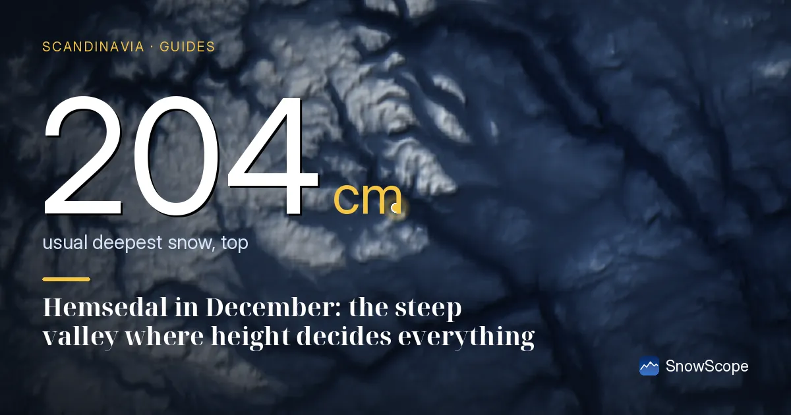

Hemsedal in December: the steep valley where height decides everything
Ride up Hemsedal in December and you climb through three different winters. On a typical 15 December our 46 winters of snow history give 32 cm at the 640 m base, 70 cm at mid-mountain (1039 m) and 106 cm at the 1439 m top. That ladder is the whole December story here.
See the live snow forecast for Hemsedal in the SnowScope appSnow depth, powder alerts and the 3D map, free.
From the valley floor to the top
Hemsedal has about 800 m of vertical, 48 km of mapped runs and 22 lifts, a lot by Norwegian standards. The base is where December is uncertain: 57 % of our winters had 30 cm there in the week of 15-21 December, and in 3 of 46 winters the ground was bare on 15 December.
Mid-mountain is a different world: 98 % of winters had 30 cm or more in that week, and even a thin year (1 in 10) had 48 cm on 15 December. At the top every one of our winters had 30 cm in every December week.


The December weeks that work
Because mid-mountain is covered so early, almost any December week works if you ski from the middle up. The usual first day with 30 cm at mid-mountain is 4 November. For deep snow, Christmas week at mid-mountain had 60 cm or more in 85 % of our winters.
At the base, wait for the second half of the month: the share with 30 cm rises from 46 % in the first week to 65 % in Christmas week.
Then and now
Hemsedal's upper slopes have lost little: the December average at mid-mountain went from 75 cm in the first 15 winters to 66 cm in the last 15, and every Christmas week of the last 15 winters had 30 cm there. The base lost more, from 45 cm to 23 cm. Last winter had 61 cm at mid-mountain on 15 December.
Money
Hemsedal's lift passes are sold with dynamic prices in its operator's official online shop. On 13 November 2026 we could not read a fixed number on the official page, so we give none here. Book early and online, and avoid the Christmas holiday dates if price matters most.
Geilo side by side
Geilo, on the high plateau to the south, is gentler and steadier. Its base (779 m) had 30 cm in the week of 15-21 December in 80 % of winters, better than Hemsedal's base, but its top (1163 m) is lower, with 68 cm on a typical 15 December. Geilo's official page shows day passes from NOK 590 (about EUR 56 at the euro reference rate of 12 November).
For steep terrain and deep snow up high, Hemsedal. For relaxed family skiing with snow down to the village and a known starting price, Geilo.
Tips for skiers
- Ski from mid-mountain up in early December; take the lift down if the base is thin.
- Buy your lift pass online as early as possible; prices change by date.
- Steep terrain after snowfall: read the Norwegian avalanche warning (varsom.no) before leaving the piste.
- Short days: be on the first lift and plan the best runs before lunch.
More maps (external sites)
References and credits
- Hemsedal: official lift-pass page of the operator (prices by date; no fixed price quoted), checked 13 November 2026 www.skistar.com/en/winter/skipass/buy-skipass/lift-pass-hemsedal/
- Geilo: official lift-pass prices (2026-27), checked 13 November 2026 www.skigeilo.no/en/ski-pass
- European Central Bank euro reference rates (2026-11-12) www.ecb.europa.eu/stats/policy_and_exchange_rates/euro_reference_exchange_rates/html/index.en.html
About these numbers
Snow numbers: SnowScope snow history, 46 past winters (1980-81 to 2025-26) at the resort's heights, corrected for height (an estimate for an area, not resort reports); 'good snow' = 30 cm or more on the ground as the week's average. Map: our typical depth on 15 December spread over the terrain by height. Runs and lifts: OpenSkiMap mapping. Lift-pass prices: the resorts' official price lists, checked on 13 November 2026; prices can change.
Official avalanche bulletins: Varsom (NVE)
Cite this report
For research, teaching or the press: the numbers and charts are free to reuse under CC BY 4.0 with this citation.
SnowScope (2026), Hemsedal in December: the steep valley where height decides everything, https://snowscope.app/blog/en/2026/11/hemsedal-december-skiing-snow-depth-price.html, accessed 2026-11-14
SnowScope (Atlas Labs). (2026, November 14). Hemsedal in December: the steep valley where height decides everything. SnowScope snow reports. https://snowscope.app/blog/en/2026/11/hemsedal-december-skiing-snow-depth-price.html
BibTeX
@misc{snowscope2026hemsedaldecemberskiingsn,
author = {{SnowScope (Atlas Labs)}},
title = {Hemsedal in December: the steep valley where height decides everything},
year = {2026},
month = nov,
howpublished = {\url{https://snowscope.app/blog/en/2026/11/hemsedal-december-skiing-snow-depth-price.html}},
note = {Published 2026-11-14 13:29 UTC; accessed 2026-11-14}
}· CC BY 4.0 · Methods, data and tools →
Hemsedal: snow and temperature by height, this winter vs last (tools) →
Follow Hemsedal
Free: a message when fresh snow is coming, and the forecast every morning.
More snow reports

For a low-cost December family ski week at Astún-Candanchú, aim for late December when top slopes hold good snow in 67 % of past winters.

Ski the 131 km of runs in the Forêt Blanche this December with a six-day pass for 298 EUR.

Valloire-Valmeinier offers 131 km of runs and a 98 % chance of 30 cm of snow at mid-mountain by mid-December.